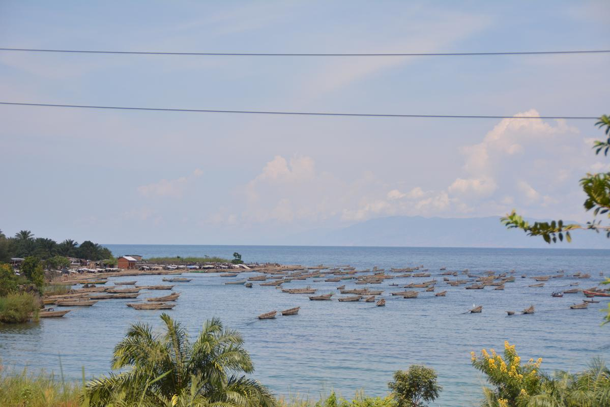
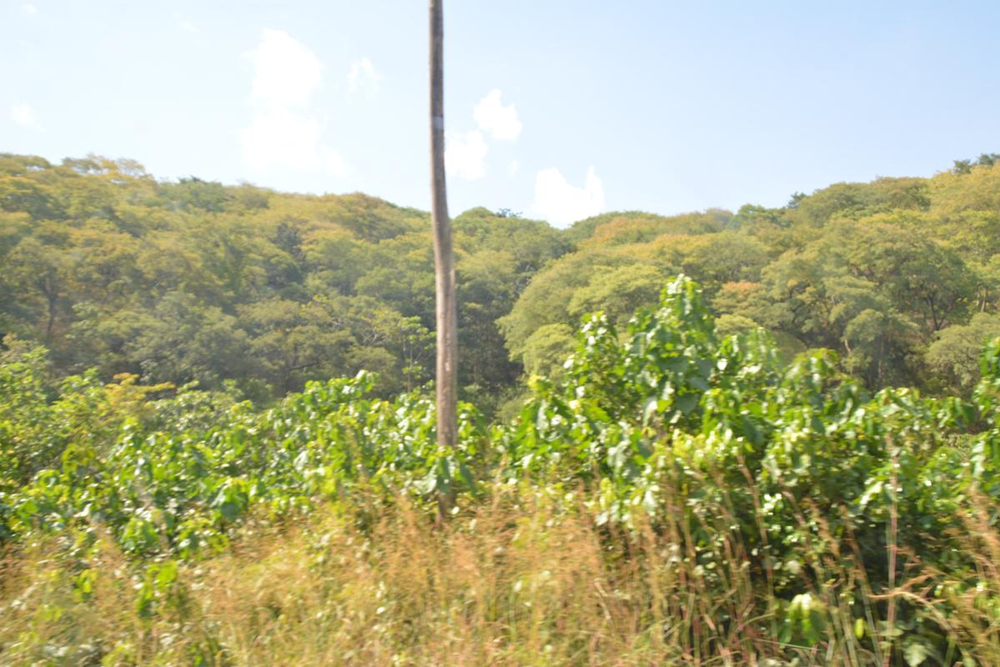

Ce 5 juin le monde célèbre la journée mondiale de l’environnement. Le thème choisi par le Programme des Nations Unies pour l’Environnement (PNUE) est : « Rapprocher les gens de la nature ».
Comme l’indique le PNUE, ce thème est choisi dans le souci d’amener les populations à prendre conscience de notre place vis-à-vis de la nature et de notre dépendance plus généralement à elle.
Le Burundi regorge une richesse considérable qui a besoin d’être protégée contre l’activité destructrice de la nature de l’homme. Il y a peu, lors de la célébration de la journée de la biodiversité, un exemple parlant a été émis par Samuel Ndayiragije, Directeur Général de l’Office Burundais de Protection de l’Environnement (OBPE). « Le Burundi abrite une riche biodiversité riche aujourd'hui estimée à 7.038 espèces végétales et animales dont 4.798 pour la flore et 2.240 pour la faune », a-t-il déclaré.

Selon une information recueillie par l’Agence Chine Nouvelle, la situation environnementale est inquiétante, selon toujours Samuel Ndayiragije. Ce denier précise que 12 espèces de mammifères ont déjà disparues tandis que 203 autres espèces sont menacées ; parmi, 26 en voie de disparition, 64 en danger et 83 dans un état de vulnérabilité. "La situation prévalant au sein de la réserve naturelle forestière de Ruvubu, où des animaux sauvages ne sont trouvés que dans les deux communes de Buhinyuza et de Kigamba faisant respectivement frontière entre les provinces de Muyinga (nord-est) et de Cankuzo (est), alors que jadis leur présence avait une forte visibilité dans neuf communes réparties sur ces provinces burundaises, illustre on ne peut plus claire la déchéance faunistique au Burundi", explique Samuel (Source : Xinhua).
Le thème choisi par le PNUE pour cette occasion devrait interpeller toute en chacun pour vivre convenablement actuellement et permettre les générations futures d’hériter un monde sain.
